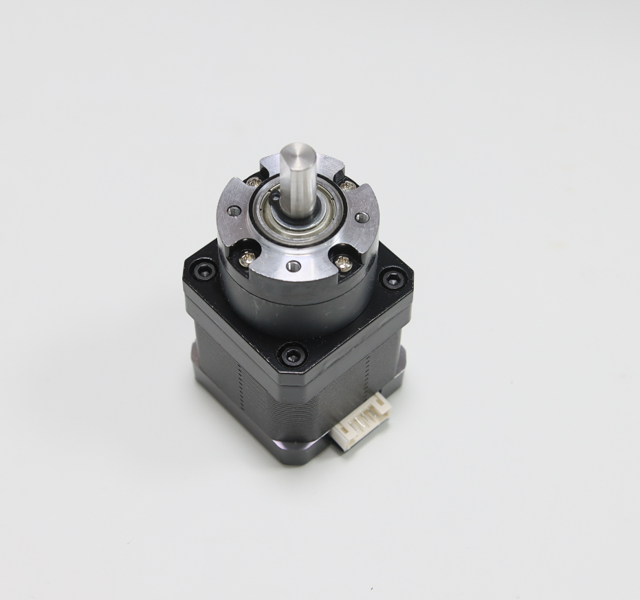
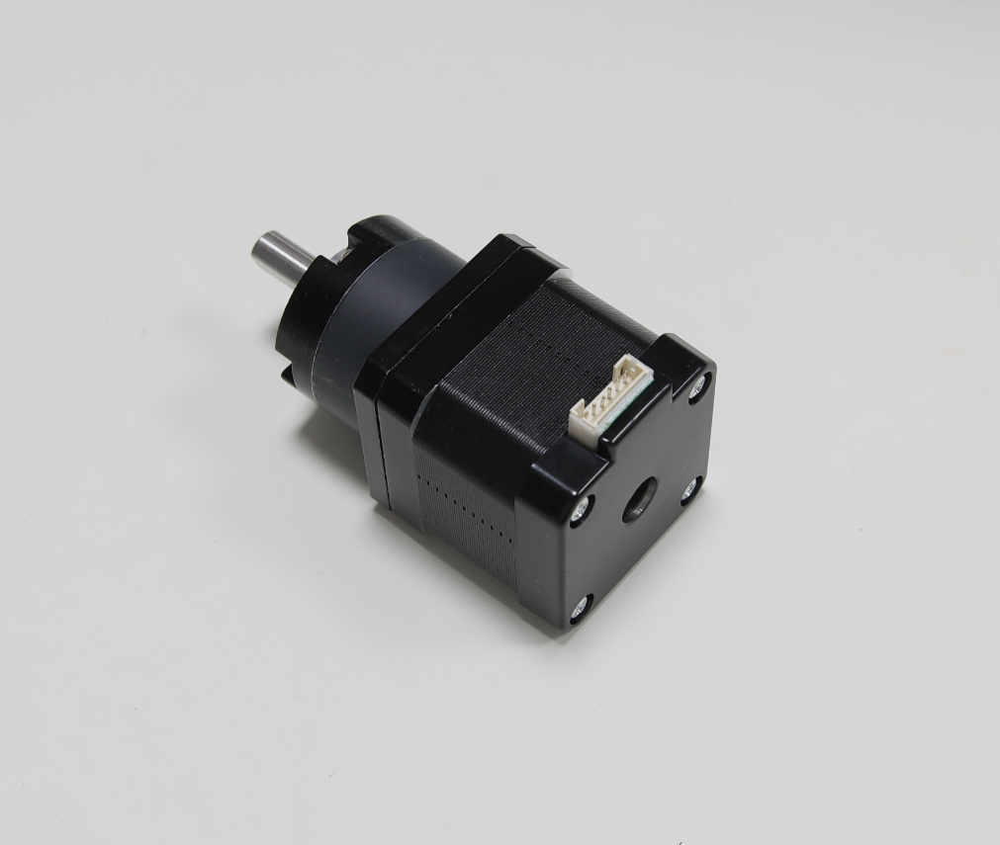
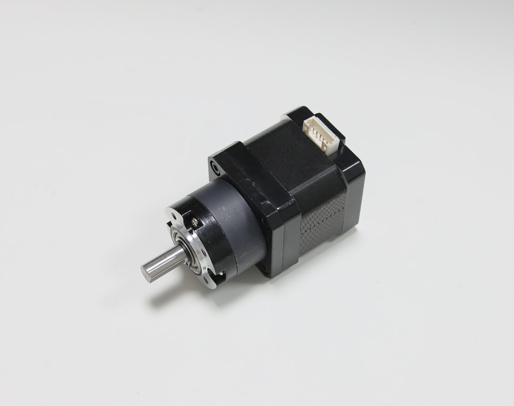
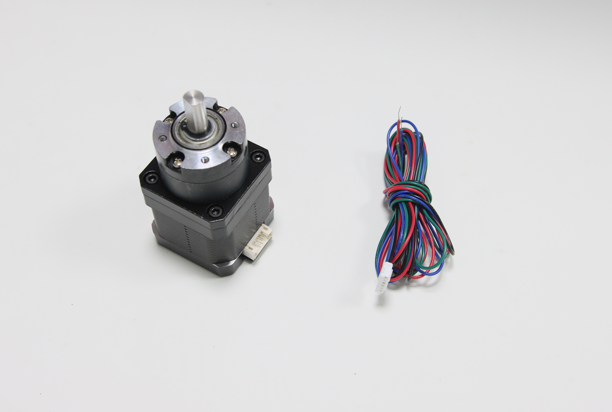
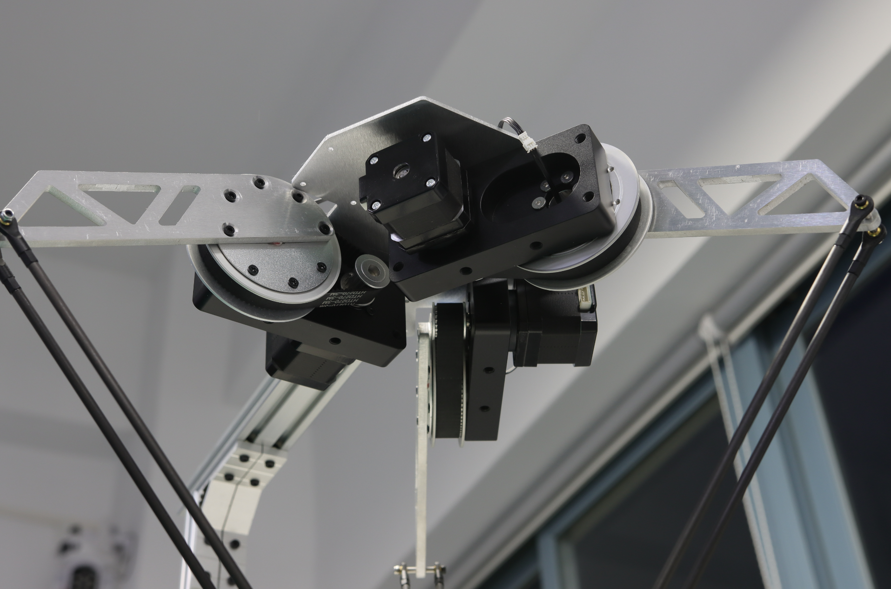
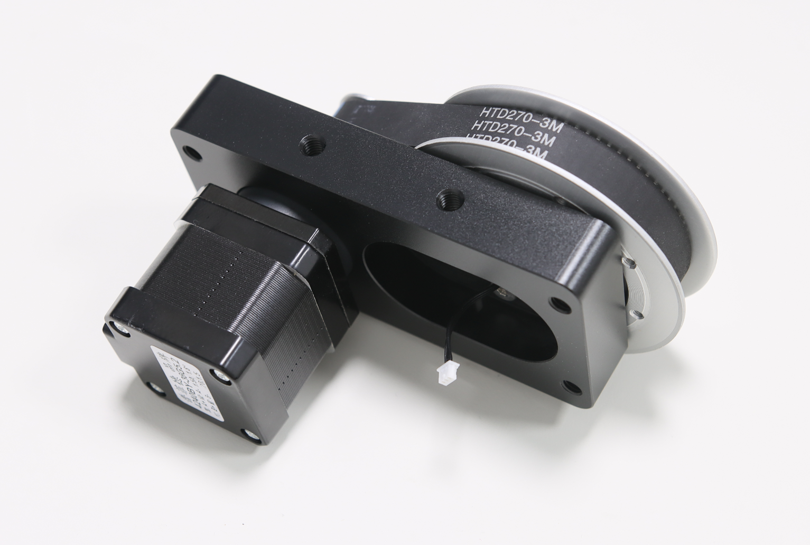
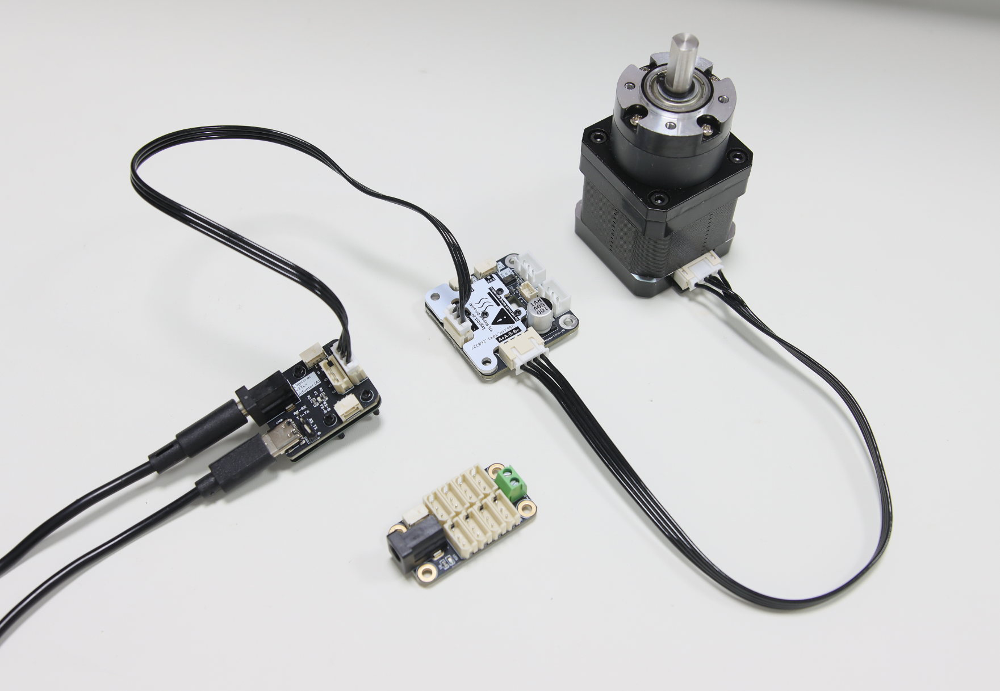
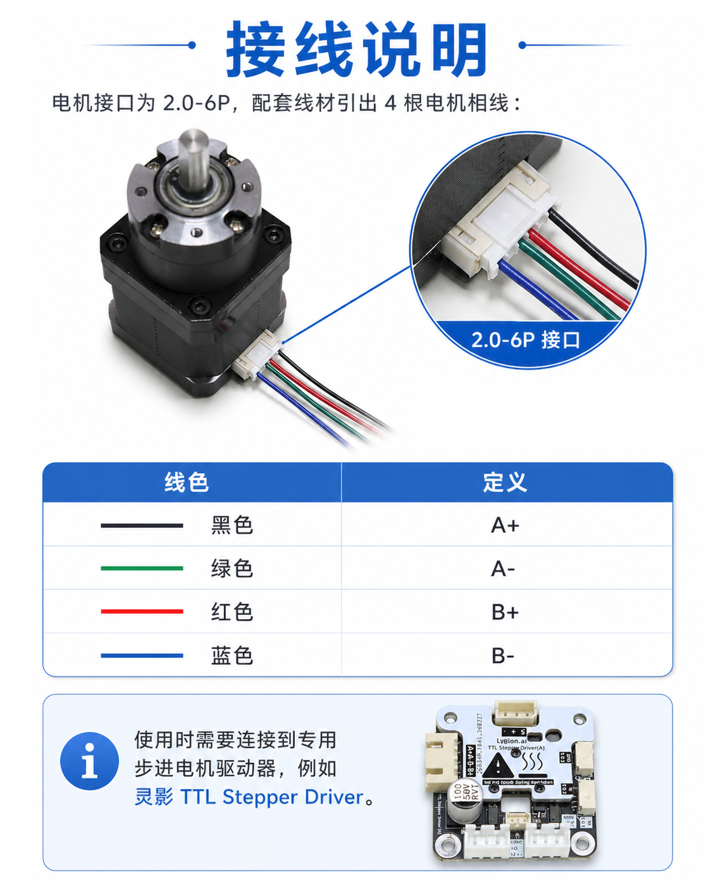
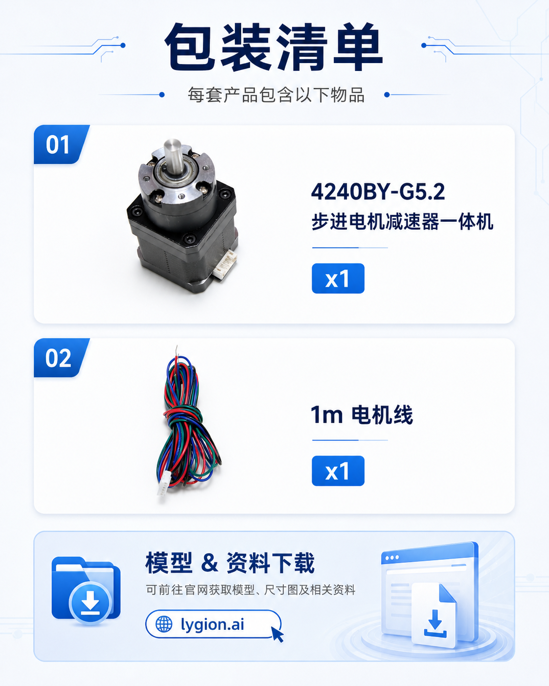

电机与减速器一体化
42HS4015A4 电机与 28mm 行星减速箱整合，整体结构更紧凑，适合桌面机器人和空间受限的机构。
42 stepper planetary geared motor
把 42 步进电机和 5.182:1 行星减速器做成一体，兼顾紧凑体积、较大的静态输出扭矩和更友好的低速控制特性。适合机器人关节、轮式底盘、丝杆滑台、转台等需要减速放扭矩的小型运动机构。




核心优势
相比直接使用普通 42 步进电机，这个一体机更适合需要低速、大扭矩、定位控制的机构。对于已经采用灵影 TTL 总线方案的项目，还可以减少布线和控制系统整合成本。
42HS4015A4 电机与 28mm 行星减速箱整合，整体结构更紧凑，适合桌面机器人和空间受限的机构。
5.182:1 减速后输出端更适合低速运行、角度定位和连续累计位置控制，便于驱动关节、丝杆和转台。
整机输出静力矩约 14kg·cm，优于直接输出的普通 42 步进电机，更适合驱动带负载的机械结构。
可接入灵影 TTL 总线步进电机驱动板，实现角度控制、连续转动模式、步进模式和多电机总线化管理。
前端安装孔为 4-M3 深 8mm、PCD Ø28，电机接口为 2.0-6P，方便匹配现有支架、连接线和控制板。
适用于机器人关节、轮式底盘、滑台、升降模组和测试夹具，也便于学生、Maker 和研发团队快速搭建原型。
应用场景
页面只展示这款电机真正合适的使用方向，不把它包装成“万能动力源”。如果你的项目核心需求是低速控制和结构紧凑，它会比直驱 42 步进更顺手。

适合小型机械臂、云台、夹爪旋转轴和实验平台关节。若再配编码器或限位结构，可继续扩展到半闭环或闭环系统。

适合丝杆推进、Z 轴升降、小型滑台和自动化执行机构，便于用角度控制实现位置调整。
可用于小型轮式机器人、实验底盘和 AGV 原型。通过连续转动模式驱动车轮时，控制逻辑比传统 STEP / DIR 分散布线更集中。
适用于旋转工作台、测试治具、展示转盘等需要稳定角度控制的场景，尤其适合需要重复定位的小型机构。
选型判断
适合直驱或高速轻载，结构更简单，但输出扭矩和低速控制体验通常不如带减速方案。
通过行星减速放大输出扭矩，更适合低速定位、机器人关节和空间紧凑的运动机构。

控制与接线
该电机接口为 2.0-6P，配套线材引出 4 根相线：A+ 黑色、A- 绿色、B+ 红色、B- 蓝色。使用时连接到专用步进电机驱动器，再通过 TTL Adapter 或上位控制器接入总线。
技术参数
| 产品型号 | 4240BY-G5.2 |
|---|---|
| 产品类型 | 42 步进行星减速电机一体机 |
| 电机型号 | 42HS4015A4 |
| 电机步距角 | 1.8° |
| 额定电压 / 电流 | 24V / 1.5A |
| 电机静力矩 | 3.0kg·cm |
| 减速器减速比 | 5.181818182 |
| 输出静力矩 | 约 14kg·cm |
| 电机机身长度 | 40mm |
| 减速箱长度 | 28mm |
| 输出轴长度 | 15mm |
| 安装孔位 | 4-M3，深 8mm，PCD Ø28 |
| 电机接口 | 2.0-6P |
| 相线定义 | A+ 黑，A- 绿，B+ 红，B- 蓝 |
| 整体重量 | 约 410g |

接线定义
配套线材已经把 4 根相线从 2.0-6P 接口引出，适合快速接入灵影 TTL Stepper Driver 或其它专用步进驱动器。若旋转方向与预期不一致，应通过驱动设置或相线校正处理，不建议在不确认定义时盲接。
包装与资料
如果你需要同时采购驱动板、Hub、转接板或其它机器人结构件，这个页面的上架形式更适合一起下单和统一配套。

资料下载
当前页面已保留官网入口与 Wiki 按钮。正式 Wiki 地址补充后，可继续挂接模型下载、结构图纸和驱动示例。